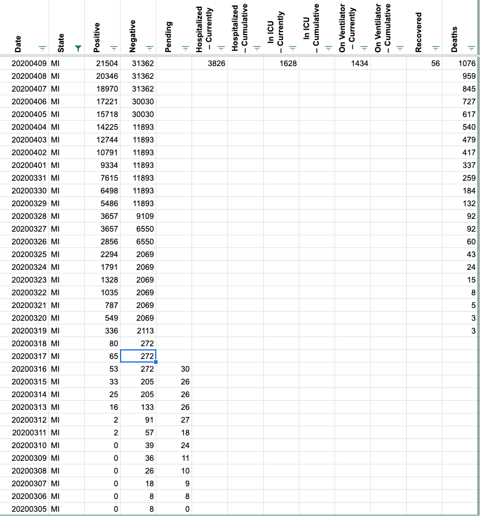
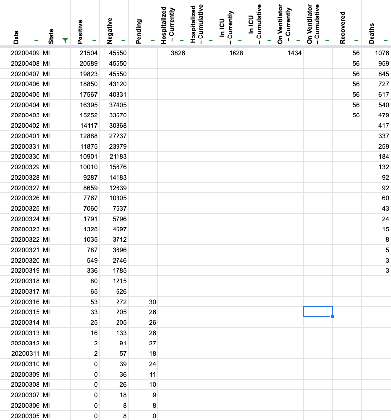
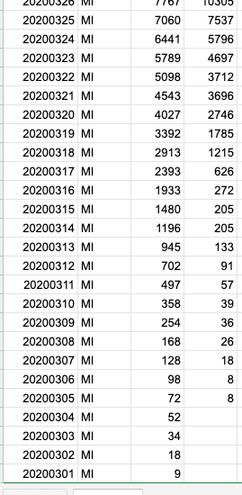

Michigan test counts moved to new page, cume negatives as of 4/6: 41,589
Issue number 173
catawbasam opened this issue on April 9, 2020 at 11:39 am
New page for test stats: https://www.michigan.gov/coronavirus/0,9753,7-406-98163_98173_99225---,00.html
copy as of 2:35 est: (I added the cumulative totals)
| Date | Positive Tests | Negative Tests | Total Tests | % Positive Tests |
|---|---|---|---|---|
| 3/16/2020 | 1 | 0 | 1 | 100.00% |
| 3/17/2020 | 134 | 625 | 759 | 17.70% |
| 3/18/2020 | 144 | 558 | 702 | 20.50% |
| 3/19/2020 | 157 | 555 | 712 | 22.10% |
| 3/20/2020 | 244 | 960 | 1,204 | 20.30% |
| 3/21/2020 | 270 | 948 | 1,218 | 22.20% |
| 3/22/2020 | 28 | 16 | 44 | 63.60% |
| 3/23/2020 | 360 | 981 | 1,341 | 26.80% |
| 3/24/2020 | 539 | 1,091 | 1,630 | 33.10% |
| 3/25/2020 | 501 | 1,709 | 2,210 | 22.70% |
| 3/26/2020 | 845 | 2,735 | 3,580 | 23.60% |
| 3/27/2020 | 1,015 | 2,331 | 3,346 | 30.30% |
| 3/28/2020 | 847 | 1,535 | 2,382 | 35.60% |
| 3/29/2020 | 834 | 1,481 | 2,315 | 36.00% |
| 3/30/2020 | 1,702 | 5,492 | 7,194 | 23.70% |
| 3/31/2020 | 1,482 | 2,754 | 4,236 | 35.00% |
| 4/1/2020 | 2,121 | 3,146 | 5,267 | 40.30% |
| 4/2/2020 | 1,893 | 2,919 | 4,812 | 39.30% |
| 4/3/2020 | 2,036 | 3,150 | 5,186 | 39.30% |
| 4/4/2020 | 2,326 | 3,276 | 5,602 | 41.50% |
| 4/5/2020 | 1,676 | 2,707 | 4,383 | 38.20% |
| 4/6/2020 | 1,824 | 2,620 | 4,444 | 41 |
| CUMULATIVE | 20979 | 41589 | 62568 |
Yes this new reporting is a definite improvement over what the state was previously providing.
And, if accurate, a bit scary! Puts them up with NY and NJ on positive rate. They are also lagging by a couple of days.
Thank you so much for catching that. Our data collection process was a little myopic so we have not explored additional pages recently. I have updated MI data to match what they are reporting. As a note - it appears that the data linked to is for specimens tested, not people tested. I have chosen to use the number in its raw state at this time until we can find something more accurate. I have also updated our cases count to match data provided by the state.
Before 
After 
One last update: 
Yes this new reporting is a definite improvement over what the state was previously providing.